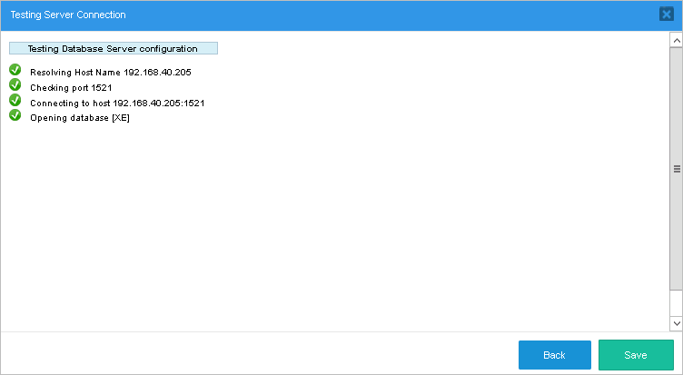
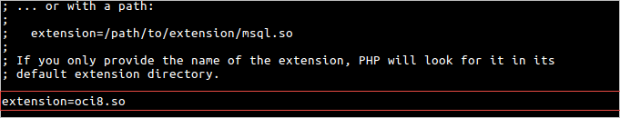
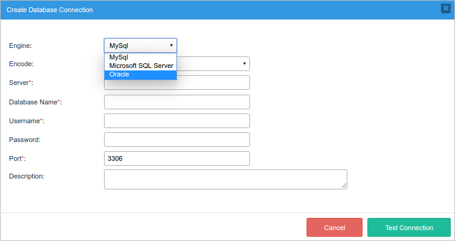
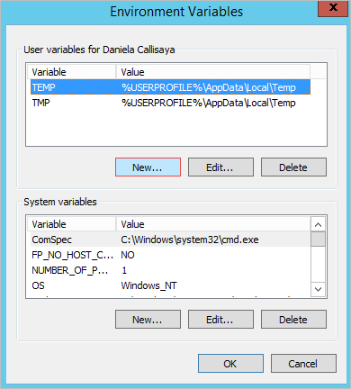

Oracle
Read this page to connect ProcessMaker 3.2 or later to an Oracle database. If the Oracle database does NOT use the UTF-8 character set used by ProcessMaker, please read the Converting Oracle to UTF-8 section.
Windows
64 bit ProcessMaker Installations
If ProcessMaker was installed by following the Stack 210 guide (which installs Apache 2.4, PHP 5.5.x and MySQL 5.5.x), or with a 64 bit Bitnami installer, read the steps below to enable the Oracle option.
Download the DLL package by clicking here.
Extract the package content in the bin folder of the Apache installation, located in:
Manual Installation:
C:\Apache24\binBitnami 64bits Installation:
C:\Bitnami\processmakerenterprise-3.2.x\apache2\bin
Then, open the php.ini file located at C:\Bitnami\processmakerenterprise-3.2.x\php in Bitnami installations, or at c:\php\php.ini in manual installations, as administrator and remove the semicolon ; at the beginning of the following line to include the php_oci8_12c dll.

Finally, restart the Apache service. Log in to ProcessMaker and the Oracle option should now be available.

Configure the rest of options and test the connection by clicking on Test Connection.

If the configuration is correct, a window similar to the image below will be displayed.

Linux
Red Hat/CentOS
First, open a terminal on the server where ProcessMaker is installed and log in as root to install the following packages required by the Oracle Instant client:
Note: These PHP packages names may vary according to the distribution.
Go to the Oracle Instant Client Downloads page.

Download the Instant Client Basic and Instant Client Devel RPM packages for the version of your Oracle database. For example, for Oracle v.11.2.0.2, download the files named "oracle-instantclient-basic-11.2.0.2-1.x86_64.rpm" and "oracle-instantclient-devel-11.2.0.2-1.x86_64.rpm".

Once the RPM files are downloaded, issue the following command to install them (do not forget to change the version of the files).

After that, install the oci8 driver with the following command:
The command prompt will ask for the location of the ORACLE_HOME directory. Press ENTER to autodetect it.

After the installation has finished, the following message will be displayed.

Finally, open the php.ini file, which is usually located on CentOS at /etc/php.ini, and add the following line:

Restart Apache.
Log in to ProcessMaker, go to the Designer and open a process for editing. Click on the Database Connections button in the Process Objects toolbox and create a new connection. In the Engine dropdown box, "Oracle" should appear as an option:

Oracle Troubleshooting
If there is a problem connecting to the database, you can try to identify the cause by following the instructions below:
- Check the Apache error log file for startup errors.
- Temporarily set
display_errors=Onin php.ini so script errors are displayed. Switch it back off when finished for security reasons. - Read the Chapter 9 of The Underground PHP and Oracle Manual, which contains information about common connection errors and discusses alternative ways to set environment variables.
- Download Oracle's SQL*Plus command line tool from the Instant Client page and check whether SQL*Plus can connect. Ensure the Environment section (not the Apache Environment section) of phpinfo.php shows the equivalent environment settings.
-
Create a script to test the OCI8 extension. For example, create a file named "testoci8.php" at the location <install-directory>/workflow/public_html/testoci8.php with the following content:
<?php //change the username, password, machine, domain and address: $conn = oci_connect('USERNAME', 'PASSWORD', 'MACHINE.DOMAIN/DATABASE'); $stid = oci_parse($conn, 'SELECT COLUMN from TABLE'); oci_execute($stid); echo "<table>\n"; while (($row = oci_fetch_array($stid, OCI_ASSOC+OCI_RETURN_NULLS)) != false) { echo "<tr>\n"; foreach ($row as $item) { echo " <td>".($item !== null ? htmlentities($item, ENT_QUOTES) : " ")."</td>\n"; } echo "</tr>\n"; } echo "</table>\n"; ?> Make sure to modify the connection credentials to suit your database. For example:
<?php
$conn = oci_connect('HR', 'hr', '192.168.40.205:1521/XE>');
$stid = oci_parse($conn, 'Select department_id, department_name from departments');
oci_execute($stid);
echo "<table>\n";
while (($row = oci_fetch_array($stid, OCI_ASSOC+OCI_RETURN_NULLS)) != false) {
echo "<tr>\n";
foreach ($row as $item) {
echo " <td>".($item !== null ? htmlentities($item, ENT_QUOTES) : " ")."</td>\n";
}
echo "</tr>\n";
}
echo "</table>\n";
?>Open a web browser and go to the address:
- http://<processmaker-address>/testoci8.php
For example, if ProcessMaker is installed at the address 192.168.51.118 on port 3280, then go to:
- http://192.168.51.118:3280/testoci8.php
The query results will be displayed, as shown in the image below.

Make sure to delete the testoci8.php file when done testing.
Converting Oracle to UTF-8
If the Oracle database uses a character set other than UTF-8, then the
NLS_LANGenvironment variable needs to be set to the UTF-8 character set on the server where ProcessMaker is installed.The format for the
NLS_LANGvariable should be:[NLS_LANGUAGE]_[NLS_TERRITORY].[NLS_CHARACTERSET]First, determine the current locale settings in the Oracle database with the following SQL query:
SELECT * FROM V$NLS_PARAMETERS; For example, if the locale is
american_america.EL8MSWIN1253, then it needs to be changed toamerican_america.UTF-8.Linux:
On a Linux server, edit the file /etc/environment with a plain text editor and add the line:
NLS_LANG=American_America.UTF8 Unfortunately the /etc/environment file isn't read by cron scripts, so also edit the /etc/profile file and add the line:
export NLS_LANG=American_America.UTF8 These settings should take effect the next time the server is rebooted. To have them take effect immediately, enter the following text in the command line of the terminal:
export NLS_LANG=American_America.UTF8 Windows:
On a Windows server, go to Control Panel > System.

Click on the Advanced system settings option on the left of the window.

Click on Environment Variables.

In the System variables section, click New.

In the Variable Name field, enter
NLS_LANGand in the Variable Value field, enterAmerican_America.UTF8. Click on Ok and close all dialogs.
Then, reboot the server for the changes to take effect.